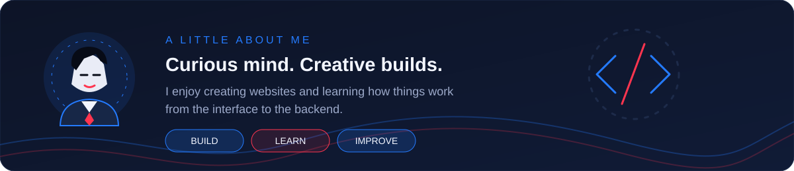
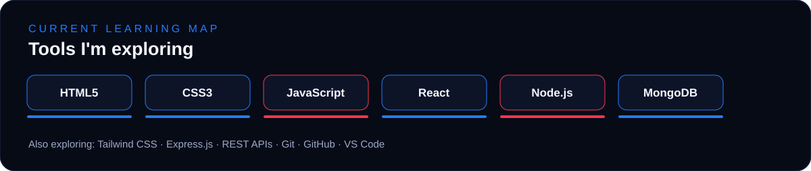
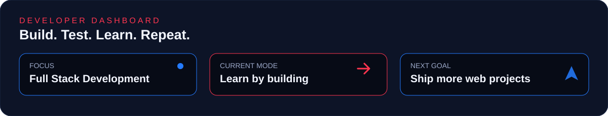

Active Learning Map: The technologies below represent tools and frameworks I am actively exploring and
applying through practical web projects.
|
Frontend & UI |
Backend & Database |
Tools & Workflow |
🚀 Featured Projects (Things I've Built)
01 · Aivon TechA modern technology web project crafted to present digital solutions and innovative services. ↗ View Live Project |
02 · Job PortalA comprehensive web application designed for job listings, career discovery, and applicant workflows. ↗ View Live Project ↗ Source Repository |
03 · Amazon CloneAn e-commerce storefront project inspired by Amazon, featuring product catalog browsing and responsive layouts. ↗ View Live Project ↗ Source Repository |
04 · Service PageA responsive web application showcasing digital services with modular components and clean UI structure. ↗ Source Repository |

🏆 Highlights & Milestones
|
🚀 Live Web Deployments Successfully launched functional web applications on Netlify and Vercel including the Aivon Tech showcase, Job Portal platform, and Amazon clone. |
⚡ Full Stack Progression Actively developing end-to-end web applications with modern frontend libraries (React) and backend runtimes (Node.js/Express). |
|
📦 Public Code Repositories Open source repositories on GitHub demonstrating clean project organization, modular code, and consistent version control. |
🎯 Continuous Engineering Practicing automated maintenance workflows with GitHub Actions to maintain code health and profile presentation. |